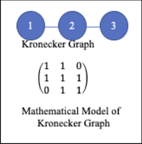
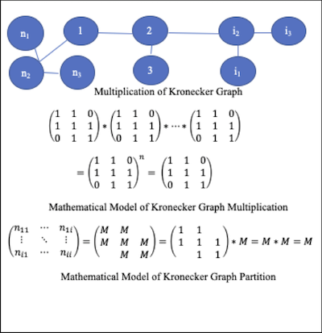

Understanding the structure of the network is central in network analysis. We are interested in extracting valuable information from the network, such as trends, popularity, dynamic of the trends, and also profiles of popular items. This prediction model can be used for many different applications. such as
In terms of data modeling, we need to define popular topics for each year with the citation data and also find out how many are new topics. In each popular topic, we need to find density of the topic, the change of the density in ten years, the diameter of the topic and the change of the diameter in ten years. Lots of features are unknown in the citation network. For example, we don’t know the related topics of the papers. we don’t know how to define the popularity because we don’t have a big picture of the citation network. We can start from any paper and search along the path through the entire network. Whatever we can find is highly related to where we started. The citation network is so big that it is not feasible to try all of the papers. Also, we know that greedy search in the network is NP-hard. It is impossible to get it done in polynomial time.
We decompose the network into two layers, as shown in figure 1. We use kronecker graph in figure 2(a) as the computation unit. Kronecker graph is the smallest symmetric graph and also is the smallest community in social network. Symmetric graph has structural properties and the mathematical properties which can support the decomposition and reconstruction.
Figure 1. Network Decomposition
Figure 2(a). Kronecker Graph
Figure 2(b). Graph Join and Project
From 1991 to 2000, we summarized the number of nodes (papers and references), the number of edges (citations), maximum number of times that a paper was cited, the averages number of times that a paper was cited, as shown in figure 3.
Each co-citation defines a topic so that the frequent co-citations define the popular topics. The frequency of the co-citation is highly biased. We use Expectation Maximization (EM) to group co-citations into 3 clusters, and statistics of popular topics is shown in figure 4. From 1991 to 2000, the number of publications, citations, and co-citations increase. From 1991 to 1995, there are less publications, citations, and co-citations. After 1995, the increase of publications, citations, and co-citations is not as fast as those years from 1991 to 1995. The number of topics increases from 1991 to 1994. After 1994, the change in the number of topics each year is small. Sometimes, it goes up and sometimes, it goes down, and it is around the average of 800 topics each year.
These trends of research in10 years indicate that technology evolves every five years and can be completely updated in 10 years. When we work the frontier research, we need to trace back for about 5 years. In more than 5 years, most of the research is about something else. The trends of new publications, citation, and co-citations are consistent which can prove each other.
The number of topics increase from 1991 to 1994. In 1991, there are no paper published about the popular topics in 2000. From 1995 to 2000, the number of topics is almost stable. the number of topics goes up and down but the changes are small. The number of topics is consistent with the number of publications, the number of citations, the number of co-citations.